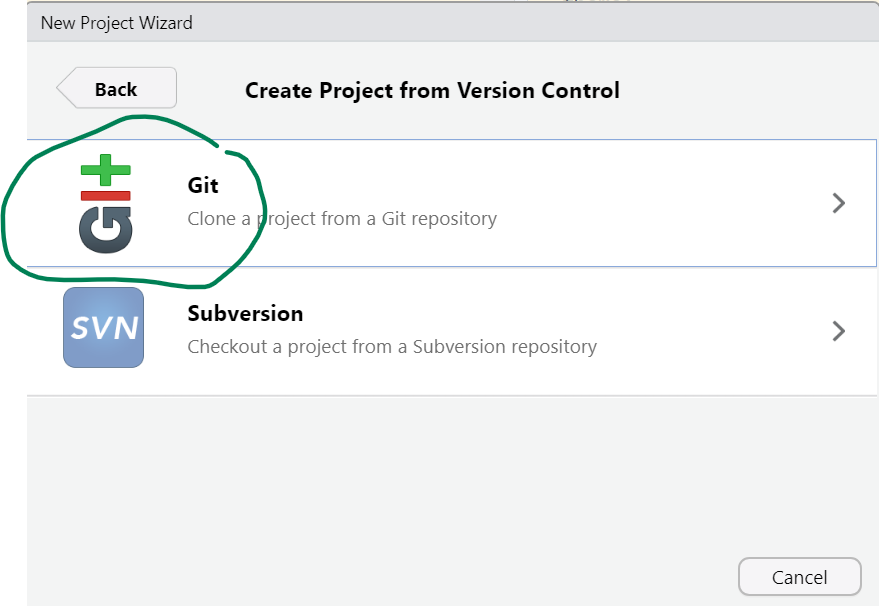
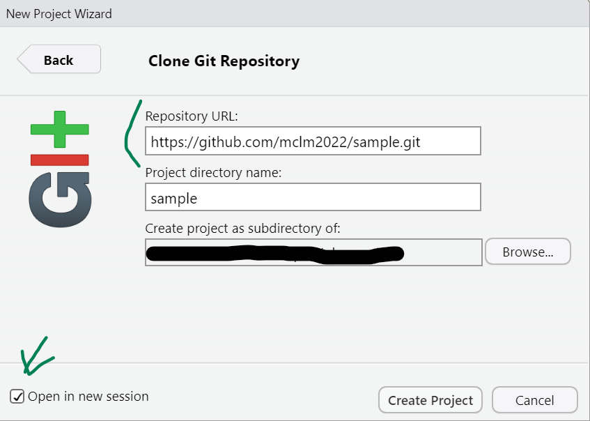

Sample paper
Not an assignment
As we reach the end of the semester, I’ve publish a sample repository to guide you in your final submission. I strongly recommend that you download it and check it out and use it as a guideline to check that you fulfill the requirements that I will take into account when grading. The content of the paper itself includes suggestions and instructions and I will assume you have read them.
Section 1 of this document provides instructions about how to clone the repository. Section 2 summarizes some points that you should take into account when checking out the repository: which aspects I find important and which are optional. As always, if anything is unclear do not hesitate to contact me. I remind you that other instructions about the exam as well as the submission dates (which are unmovable deadlines) are posted on Toledo.
1 Cloning the repo
There are two main ways in which you can download the sample repository. In both cases you will need its cloning URL, which is git@github.com:mclm2022/sample.git if you use SSH for authentication and https://github.com/mclm2022/sample.git otherwise. The main ways are via the command line or as a new R Studio project.
In Git Bash or another command line terminal, go to the directory where you want to download the repository and type (replacing <url> with the URL of the repo:
git clone <url>This will create a directory called “sample” with the project inside. You can go to that directory and click on the sample.Rproj file to open it with R Studio or open it from R Studio itself as any other project.
Follow the steps to create a new R Project, but instead of selecting “New Directory”, select “Version Control”. Then select the “Git” option (Figure 1 (a)) and fill in the form shown in Figure 1 (b). Under “Repository URL”, insert the corresponding URL. You may also change the name of the directory (if you don’t want it to be called “sample”) and select on which folder to store the project.


2 Tips and tricks
2.1 README file
The repository, crucially, includes a README file with a description of its composition, which shows up in a nice format in the landing page of the repository. It makes it easier to navigate and, if you make such a file, it will help me understand your file structure, and thus know (1) which scripts to run in which order, (2) where to store my copy of the corpus and (3) which are the source and final files of your paper.
2.2 File types
It is good practice NOT to have spaces in your filenames and to keep them in lowercase, since some systems are case-insensitive and won’t distinguish between “script.R” and “Script.R”.
The project goes beyond the paper itself: it includes script files with the “.R” extension, a Quarto source file with the “.qmd” extension, three different outputs, helpers for citations and some data files. If you store a tabulated dataset (a dataframe), please do so in an interoperable format (comma- or tab-separated values). The extension is not so important: it could be .csv, .txt., .tsv… but do specify which delimiter is used.1 Notice that it is also possible to store R objects as RDS files (as done in line 66 of data-collection.R) — this file format can only be read with R, but it is useful to store intermediate stages of R processes to be read in other R scripts.
An R object can be saved as an RDS file with saveRDS(), and is then read with readRDS(). It is useful to store R-native objects such as lists and model results, assuming that they only need to be read with R (and not shared to be read with other software).
2.3 Formats
While the sample project includes the output in three different formats, that is not necessary for the final submission: one is enough. But I generated all three for illustration and to give tips for whatever format you choose.
There are three interesting YAML fields that you might want to add if you choose to use an HTML output:
themeallows you to set a Bootswatch Theme for the paper. You could also use thecssfield to link to a CSS file.code-link: trueturns names of functions and packages written between backticks or in code chunks into links to their documentations (packages should also be surrounded by curly braces).toc: trueactivates a Table of Contents.
If you want a Table of Contents in your PDF file, you can set toc: true in the YAML. You may also activate a List of Figures and List of Tables with the lof and lot fields respectively.
The references will be automatically generated at the end, but the heading won’t, so you should add it manually at the bottom of your Quarto file. Remember to add {.unnumbered} next to the heading to avoid section numbering.
You may set the format of your styles in your .docx output by defining them in a different Word file and referencing it in the reference-doc field.
The references will be automatically generated at the end, but the heading won’t, so you should add it manually at the bottom of your Quarto file. Remember to add {.unnumbered} next to the heading to avoid section numbering.
In addition to the format-specific YAML fields, the following fields can be of interest:
number-sections: truegenerates automatic numbering for the sections and thus allows for cross-references between sections. Remember to use only one#for your top level headings so that the numbering doesn’t start at 0.echo: falsehides the code in code chunks while still letting the code run and printing the output.abstract(optional) lets you add an abstract. Theabstract-titlefield is only applicable to HTML output.bibliographyandcslreference the relevant files for citations.prefer-htmlis only necessary if you want multiple formats: it keeps Quarto from complaining if you use “HTML-specific features” in non-HTML output.
Some fields, not used in this example, can either be set in each figure/table chunk or set at the beginning to apply to the full document:
fig-heightandfig-widthif you want to set a different figure size from the default.fig-cap-locationandtbl-cap-locationto define a location for captions different than the default (e.g. margins).
If you do want to generate different outputs, the following functions may come in handy: knitr::is_latex_output() and knitr::is_html_output(). The former returns TRUE when a file is being rendered to PDF and FALSE when it is rendered to HTML or Word; the latter returns TRUE when the output format is HTML and FALSE when it is PDF or Word. This way, you may set a different family font for plots depending on the output format (see Line 35) or decide to only print the unnumbered “References” heading when the output is not HTML (see Line 190).
Footnotes
File extensions are conventions that help you figure out how to open a file, but don’t change the nature of the file itself.↩︎